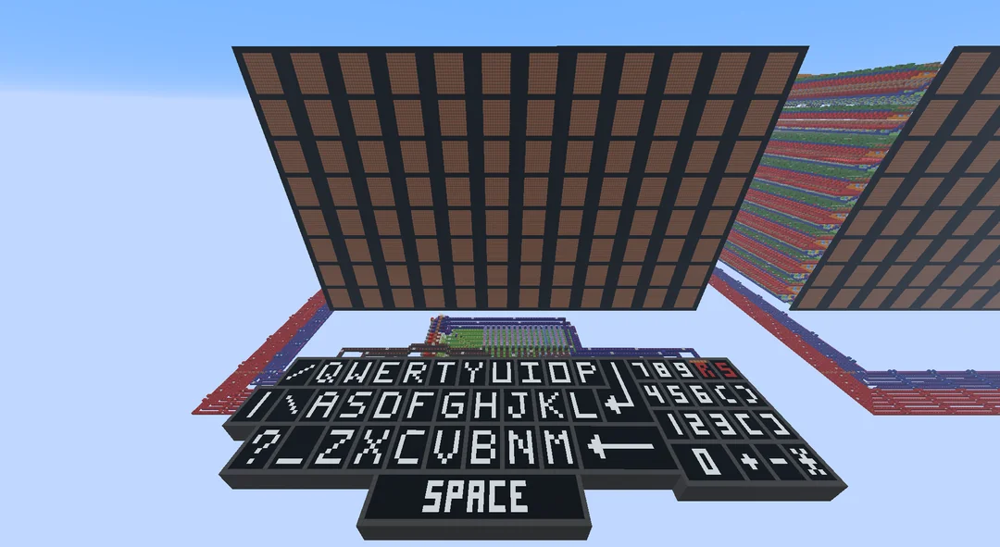
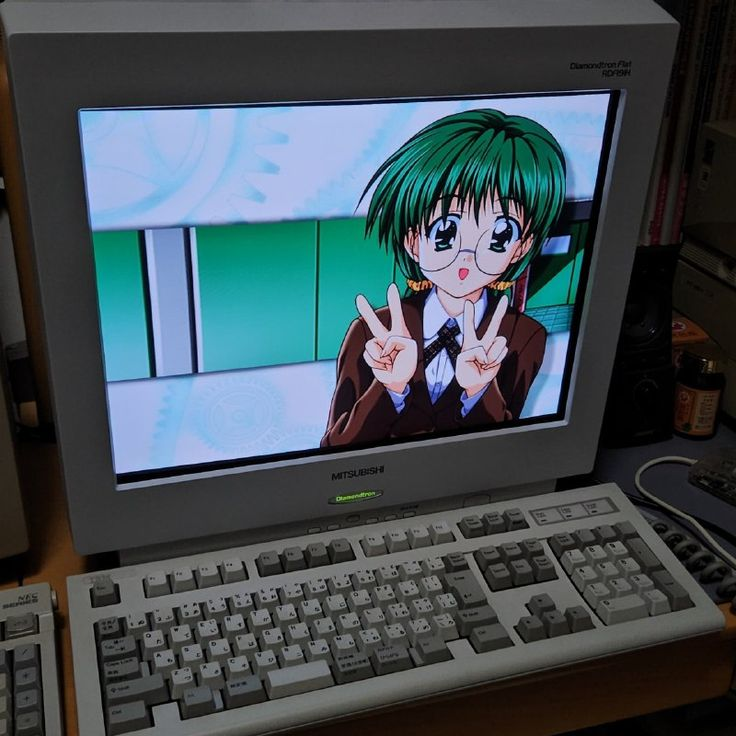

My programming interests are trying to solve problems on leetcode and I'm interested in doing redstone computer projects on Minecraft. I also want to make a cyberdeck someday and try linux. Lastly, I really love old computers and hardware it looks so fun building those old machines, and I want to get my hands on one someday too.

redstoneAbove is a redstone project that user TheBertoxx created. This is the sort passion projects that I want to try doing in my spare time to apply things I learn into something fun and interesting.
